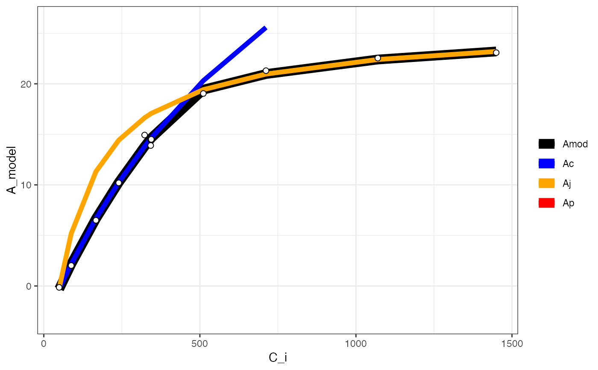
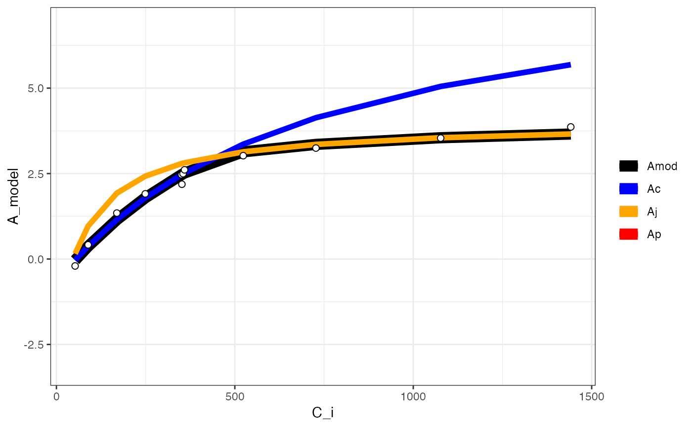

Fitting ACi curves
fit_aci_response(
data,
varnames = list(A_net = "A_net", T_leaf = "T_leaf", C_i = "C_i", PPFD = "PPFD", g_mc =
"g_mc"),
P = 100,
fitTPU = TRUE,
alpha_g = 0,
R_d_meas = NULL,
useR_d = FALSE,
useg_mc = FALSE,
useg_mct = FALSE,
usegamma_star = FALSE,
useK_M = FALSE,
useK_C_K_O = FALSE,
alpha = 0.24,
theta_J = 0.85,
gamma_star25 = 42.75,
Ea_gamma_star = 37830,
K_M25 = 718.4,
Ea_K_M = 65508.28,
g_mc25 = 0.08701,
Ea_g_mc = 0,
K_C25 = NULL,
Ea_K_C = NULL,
K_O25 = NULL,
Ea_K_O = NULL,
Oconc = 21,
gamma_star_set = NULL,
K_M_set = NULL,
...
)Dataframe for A-Ci curve fitting
List of variable names. varnames = list(A_net = "A_net", T_leaf = "T_leaf", C_i = "C_i", PPFD = "PPFD", g_mc = "g_mc"), where A_net is net CO2 assimilation, T_leaf is leaf temperature in Celsius, C_i is intercellular CO2 concentration in umol/mol, PPFD is incident irradiance in umol m-2 s-1 (note that it is ASSUMED to be absorbed irradiance, so be sure to adjust according to light absorbance and PSI/PSII partitioning accordingly OR interpret the resultant values of J and J_max with caution), g_mc is mesophyll conductance to CO2 in mol m-2 s-1 Pa-1.
Atmospheric pressure in kPa
Should triose phosphate utilization (V_TPU) be fit?
Fraction of respiratory glycolate carbon that is not returned to the chloroplast (von Caemmerer, 2000). If ACi curves show high-CO2 decline, then this value should be > 0.
Measured value of respiratory CO2 efflux in umol m-2 s-1. Input value should be positive to work as expected with the equations.
Use a measured value of R_d? Set to TRUE if using R_d_meas.
Use mesophyll conductance? Set to TRUE if specifying g_mc in varnames above.
Use mesophyll conductance temperature response? Set to TRUE if using a temperature response of mesophyll conductance.
Specify gamma_star value? If FALSE, uses a temperature response function with Nicotiana tabacum defaults from Bernacchi et al. 2001.
Specify K_M? If FALSE, uses an Arrhenius temperature response function with Nicotiana tabacum defaults from Bernacchi et al. 2001.
Use individual carboxylation/oxygenation constants for rubisco? If TRUE, need to specify values at 25C and activation energy for the Arrhenius temperature response function.
Quantum yield of CO2 assimilation
Curvature of the photosynthetic light response curve
gamma_star at 25C in umol mol-1
Activation energy of gamma_star in J mol-1
Michaelis-Menten constant for rubisco at 25C
Activation energy for K_M in J mol-1
Mesophyll conductance at 25C in mol m-2 s-1
Activation energy of g_mc in J mol-1
Michaelis-Menten constant for rubisco carboxylation at 25C
Activation energy for K_C in J mol-1
Michaelis-Menten constant for rubisco oxygenation at 25C
Activation energy for K_O in J mol-2
O2 concentration in intracellular O2 when using K_C_K_O
Value of gamma_star to use (in ppm) if usegamma_star = TRUE
Value of K_M to use if useK_M = TRUE
Other arguments to pass on
fit_aci_response fits ACi curves using an approach similar to Gu et al. 2010. Iterates all possible C_i transition points and checks for inadmissible curve fits. If no curves are admissible (either due to poor data or poor assumed parameters), the output will include a dataframe of NA values. Default parameters are all from Bernacchi et al. 2001, 2002.
Bernacchi CJ, Singsaas EL, Pimentel C, Portis AR, Long SP. 2001. Improved temperature response functions for models of rubisco-limited photosynthesis. Plant Cell Environment 24:253-259.
Bernacchi CJ, Portis AR, Nakano H, von Caemmerer S, Long SP. 2002. Temperature response of mesophyll conductance. Implications for the determination of rubisco enzyme kinetics and for limitations to photosynthesis in vivo. Plant Physiology 130:1992-1998.
Gu L, Pallardy SG, Tu K, Law BE, Wullschleger SD. 2010. Reliable estimation of biochemical parameters from C3 leaf photosynthesis-intercellular carbon dioxide response curves. Plant Cell Environment 33:1852-1874.
von Caemmerer S. 2000. Biochemical models of leaf photosynthesis. CSIRO Publishing, Collingwood.
# \donttest{
# Read in your data
# Note that this data is coming from data supplied by the package
# hence the complicated argument in read.csv()
# This dataset is a CO2 by light response curve for a single sunflower
data <- read.csv(system.file("extdata", "A_Ci_Q_data_1.csv",
package = "photosynthesis"
))
# Define a grouping factor based on light intensity to split the ACi
# curves
data$Q_2 <- as.factor((round(data$Qin, digits = 0)))
# Convert leaf temperature to K
data$T_leaf <- data$Tleaf + 273.15
# Fit ACi curve. Note that we are subsetting the dataframe
# here to fit for a single value of Q_2
fit <- fit_aci_response(data[data$Q_2 == 1500, ],
varnames = list(
A_net = "A",
T_leaf = "T_leaf",
C_i = "Ci",
PPFD = "Qin"
)
)
# View fitted parameters
fit[[1]]
#> Num V_cmax V_cmax_se J_max J J_se V_TPU V_TPU_se R_d
#> 6 0 62.797 2.176227 110.3051 103.9718 0.1847135 1000 NA -0.3470509
#> R_d_se cost citransition1 citransition2 V_cmax_pts J_max_pts V_TPU_pts
#> 6 0.3947545 1.063979 427.6839 1450.485 8 4 0
#> alpha alpha_g gamma_star25 Ea_gamma_star K_M25 Ea_K_M g_mc25 Ea_g_mc Oconc
#> 6 0.24 0 42.75 37830 718.4 65508.28 0.08701 0 21
#> theta_J
#> 6 0.85
# View graph
fit[[2]]
#> Warning: Removed 2 rows containing missing values (`geom_line()`).
#> Warning: Removed 12 rows containing missing values (`geom_line()`).

# View data with modelled parameters attached
fit[[3]]
#> obs elapsed E A Ca Ci gsw gbw
#> 5 5 718.0 0.006931781 -0.1406383 50.13264 49.25168 0.3977929 2.522060
#> 4 4 526.5 0.006822230 2.0214430 100.21358 87.79565 0.3666962 2.521511
#> 3 3 335.0 0.006835766 6.4968613 205.26303 167.01332 0.3460976 2.522437
#> 2 2 150.5 0.006840191 10.2002713 300.21123 240.05871 0.3409737 2.522305
#> 1 1 0.0 0.006933125 14.9322587 409.04219 322.96619 0.3458193 2.520800
#> 6 6 904.0 0.006959908 13.8964648 409.10935 342.49024 0.4284309 2.521371
#> 7 7 1095.5 0.006855393 14.4590842 409.94735 342.87631 0.4400143 2.521611
#> 8 8 1284.9 0.006750328 14.5049581 410.04603 344.29877 0.4499482 2.521286
#> 9 9 1474.9 0.006555650 19.0404318 599.40448 511.06913 0.4450791 2.521683
#> 10 10 1666.4 0.006172314 21.2998854 819.41719 711.81479 0.4172707 2.521531
#> 11 11 1850.9 0.005816880 22.5445607 1199.20481 1070.08139 0.3873778 2.522192
#> 12 12 2042.4 0.005492431 23.0818717 1599.29784 1449.48525 0.3585443 2.521088
#> gtw gtc Rabs TleafEB TleafCnd SVPleaf RHcham VPcham
#> 5 0.3659376 0.2313601 241.6674 28.25711 27.50283 3.686233 54.23631 2.142473
#> 4 0.3394385 0.2144290 241.6660 28.32365 27.51332 3.688497 51.78294 2.049588
#> 3 0.3217153 0.2031194 241.6668 28.34146 27.48478 3.682341 49.16601 1.948459
#> 2 0.3172804 0.2002916 241.6665 28.35318 27.50161 3.685970 48.57427 1.926466
#> 1 0.3214601 0.2029580 241.6649 28.35394 27.51282 3.688388 48.53677 1.928186
#> 6 0.3917129 0.2478568 241.6735 28.19920 27.44618 3.674032 56.52899 2.226646
#> 7 0.4013831 0.2540520 241.6663 28.19707 27.45756 3.676481 58.13998 2.285681
#> 8 0.4096338 0.2593415 241.6651 28.19446 27.45328 3.675559 59.48699 2.334040
#> 9 0.4055972 0.2567530 241.6672 28.23138 27.47052 3.679270 60.31725 2.363699
#> 10 0.3823593 0.2418674 241.6676 28.32178 27.49980 3.685581 60.60588 2.371703
#> 11 0.3571022 0.2257115 241.6632 28.44030 27.55257 3.696975 60.55004 2.371230
#> 12 0.3324348 0.2099589 241.6664 28.54705 27.60233 3.707749 60.30744 2.363090
#> SVPcham VPDleaf LatHFlux SenHFlux NetTherm EBSum Fo Fm
#> 5 3.950255 1.543760 -305.6915 161.4569 13.96792 111.4008 159.0758 1.5088
#> 4 3.958037 1.638908 -300.8603 164.6094 14.24689 119.6619 159.0758 1.5088
#> 3 3.963021 1.733882 -301.4573 171.5026 14.83755 126.5497 159.0758 1.5088
#> 2 3.966021 1.759504 -301.6524 170.9804 14.79535 125.7898 159.0758 1.5088
#> 1 3.972630 1.760202 -305.7508 173.2585 15.00441 124.1770 159.0758 1.5088
#> 6 3.938945 1.447386 -306.9319 162.3951 14.04549 111.1821 159.0758 1.5088
#> 7 3.931341 1.390800 -302.3228 156.3355 13.51863 109.1976 159.0758 1.5088
#> 8 3.923614 1.341519 -297.6895 152.2902 13.16801 109.4338 159.0758 1.5088
#> 9 3.918778 1.315571 -289.1042 147.0823 12.71545 112.3608 159.0758 1.5088
#> 10 3.913322 1.313878 -272.1991 139.8305 12.08956 121.3886 159.0758 1.5088
#> 11 3.916149 1.325745 -256.5244 134.3833 11.61933 131.1414 159.0758 1.5088
#> 12 3.918405 1.344659 -242.2162 128.9097 11.15426 139.5142 159.0758 1.5088
#> Fv Fv.Fm Adark Fs Fm. PhiPS2 PS2.1 Qabs_fs
#> 5 -157.567 -104.432 0.7443293 657.5796 725.760 0.09394343 0.5 1261.212
#> 4 -157.567 -104.432 0.7443293 650.4156 737.447 0.11801719 0.5 1261.207
#> 3 -157.567 -104.432 0.7443293 636.9378 748.390 0.14892266 0.5 1261.212
#> 2 -157.567 -104.432 0.7443293 629.2678 764.102 0.17646104 0.5 1261.210
#> 1 -157.567 -104.432 0.7443293 625.7865 787.556 0.20540703 0.5 1261.201
#> 6 -157.567 -104.432 0.7443293 614.0545 772.605 0.20521542 0.5 1261.244
#> 7 -157.567 -104.432 0.7443293 612.1308 772.188 0.20727749 0.5 1261.206
#> 8 -157.567 -104.432 0.7443293 613.9303 776.699 0.20956470 0.5 1261.208
#> 9 -157.567 -104.432 0.7443293 616.1023 802.446 0.23221960 0.5 1261.214
#> 10 -157.567 -104.432 0.7443293 616.8261 812.518 0.24084622 0.5 1261.218
#> 11 -157.567 -104.432 0.7443293 616.6304 807.480 0.23635208 0.5 1261.198
#> 12 -157.567 -104.432 0.7443293 618.1282 803.573 0.23077536 0.5 1261.214
#> Afs ETR Fv..Fm. PhiCO2 NPQ Fo. Fv.
#> 5 -0.1406383 59.24130 0.3620481 -0.000701680 -0.9979211 463.00 262.760
#> 4 2.0214430 74.42206 0.3702869 0.001012612 -0.9979540 464.38 273.067
#> 3 6.4968613 93.91150 0.3874851 0.004561115 -0.9979839 458.40 289.990
#> 2 10.2002713 111.27717 0.4160989 0.007497519 -0.9980254 446.16 317.942
#> 1 14.9322587 129.52981 0.4469981 0.011249536 -0.9980842 435.52 352.036
#> 6 13.8964648 129.41335 0.4373063 0.010427908 -0.9980471 434.74 337.865
#> 7 14.4590842 130.70983 0.4419494 0.010874316 -0.9980461 430.92 341.268
#> 8 14.5049581 132.15229 0.4416370 0.010910677 -0.9980574 433.68 343.019
#> 9 19.0404318 146.43928 0.4628424 0.014506742 -0.9981197 431.04 371.406
#> 10 21.2998854 151.87978 0.4695502 0.016298180 -0.9981431 431.00 381.518
#> 11 22.5445607 149.04339 0.4697330 0.017285336 -0.9981315 428.18 379.300
#> 12 23.0818717 145.52859 0.4652882 0.017711139 -0.9981224 429.68 373.893
#> qP qN qP_Fo qN_Fo Qin Qabs alpha CO2_s
#> 5 0.2594778 1.569372 0.1203146 4.596466 1500.001 1261.212 0.8408076 50.13264
#> 4 0.3187182 1.589942 0.1504767 4.670638 1499.995 1261.207 0.8408074 100.21358
#> 3 0.3843313 1.634703 0.1891219 4.740087 1500.001 1261.212 0.8408074 205.26303
#> 2 0.4240844 1.715037 0.2228568 4.839804 1499.998 1261.210 0.8408074 300.21123
#> 1 0.4595256 1.811122 0.2573980 4.988655 1499.988 1261.201 0.8408074 409.04219
#> 6 0.4692716 1.779872 0.2584236 4.893768 1500.039 1261.244 0.8408076 409.10935
#> 7 0.4690073 1.794735 0.2610569 4.891122 1499.994 1261.206 0.8408076 409.94735
#> 8 0.4745180 1.793711 0.2635404 4.919751 1499.996 1261.208 0.8408070 410.04603
#> 9 0.5017250 1.864678 0.2896368 5.083154 1500.003 1261.214 0.8408074 599.40448
#> 10 0.5129296 1.888302 0.2994785 5.147076 1500.008 1261.218 0.8408072 819.41719
#> 11 0.5031626 1.888975 0.2943373 5.115103 1499.985 1261.198 0.8408070 1199.20481
#> 12 0.4959837 1.873232 0.2877357 5.090307 1500.005 1261.214 0.8408070 1599.29784
#> CO2_r H2O_s H2O_r Flow Pa X.Pcham Tair Tleaf
#> 5 50.33951 25.38131 18.62544 599.9975 84.31147 0.09997111 28.69028 27.50283
#> 4 102.91871 24.28060 17.62401 599.9987 84.31259 0.09997567 28.72422 27.51332
#> 3 213.16303 23.08108 16.40309 599.9994 84.31804 0.09997850 28.74592 27.48478
#> 2 312.46510 22.81993 16.13578 599.9952 84.32033 0.09998413 28.75898 27.50161
#> 1 426.81068 22.83998 16.06510 599.9904 84.32160 0.09991528 28.78770 27.51282
#> 6 425.85313 26.37858 19.60228 600.0019 84.31114 0.10000584 28.64085 27.44618
#> 7 427.21665 27.07755 20.40784 600.0050 84.31237 0.10001066 28.60755 27.45756
#> 8 427.31890 27.65027 21.08660 600.0011 84.31292 0.09999822 28.57365 27.45328
#> 9 622.37435 28.00072 21.62865 600.0012 84.31565 0.10001173 28.55241 27.47052
#> 10 845.77497 28.09407 22.09512 599.9957 84.32007 0.09997754 28.52842 27.49980
#> 11 1228.72516 28.08765 22.43412 599.9967 84.32256 0.09995831 28.54085 27.55257
#> 12 1631.16355 27.99132 22.65266 600.0037 84.32221 0.10002844 28.55077 27.60233
#> Q f_red f_blue F Q_modavg Q_red Q_blue F_avg
#> 5 1500.001 0.9729923 0.02700787 657.5939 5.0001 1454.621 40.38000 657.5796
#> 4 1499.995 0.9729945 0.02700592 650.4325 5.0001 1454.625 40.37032 650.4156
#> 3 1500.001 0.9729963 0.02700414 636.9214 5.0001 1454.630 40.37032 636.9378
#> 2 1499.998 0.9729978 0.02700251 629.2549 5.0001 1454.627 40.37129 629.2678
#> 1 1499.988 0.9729987 0.02700143 625.8157 5.0001 1454.619 40.37000 625.7865
#> 6 1500.039 0.9729927 0.02700752 613.9754 5.0001 1454.659 40.38000 614.0545
#> 7 1499.994 0.9729912 0.02700894 612.1460 5.0001 1454.614 40.38000 612.1308
#> 8 1499.996 0.9730076 0.02699250 613.9301 5.0001 1454.645 40.35161 613.9303
#> 9 1500.003 0.9729951 0.02700483 616.1015 5.0001 1454.631 40.36935 616.1023
#> 10 1500.008 0.9730035 0.02699635 616.8167 5.0001 1454.646 40.36226 616.8261
#> 11 1499.985 0.9730096 0.02699017 616.6175 5.0001 1454.635 40.35000 616.6304
#> 12 1500.005 0.9730066 0.02699341 618.1498 5.0001 1454.653 40.35129 618.1282
#> dF.dt dF_dc.dt F_dc_avg Flow_s Flow_r Txchg Tirga Tchopper
#> 5 -0.1319658 -10.276923 10454.562 634.039 229.327 24.9998 34.2650 30.0000
#> 4 -1.2368889 31.565812 10369.450 633.534 228.870 24.9996 34.3585 30.0000
#> 3 -0.3230769 -18.444444 10171.204 633.421 228.234 24.9988 34.4746 29.9999
#> 2 -0.7379145 -1.008547 10073.535 633.347 228.031 24.9994 34.5749 29.9999
#> 1 0.2101197 -7.982906 10049.481 632.207 228.721 24.9992 34.6410 30.0000
#> 6 6.0049231 86.683419 9843.230 633.950 230.393 24.9993 34.1884 29.9999
#> 7 1.1741880 20.968205 9819.399 633.934 231.109 24.9996 34.0928 29.9999
#> 8 0.6564786 5.070085 9857.133 633.937 231.456 25.0002 33.9822 29.9998
#> 9 1.6553846 36.687521 9896.574 633.938 232.251 24.9996 33.8629 29.9999
#> 10 -0.4431111 35.111453 9962.386 633.745 233.046 24.9999 33.7311 29.9997
#> 11 -0.7200342 144.601709 10310.792 633.088 234.314 25.0002 33.5765 29.9998
#> 12 -6.3896752 132.389744 10879.723 632.935 235.156 24.9997 33.4103 29.9997
#> Ts Tr Q_2 T_leaf C_i A_net PPFD C
#> 5 34.3729 34.4069 1500 300.6528 49.25168 -0.1406383 1500.001 49.25168
#> 4 34.4454 34.4799 1500 300.6633 87.79565 2.0214430 1499.995 87.79565
#> 3 34.5260 34.5617 1500 300.6348 167.01332 6.4968613 1500.001 167.01332
#> 2 34.6045 34.6424 1500 300.6516 240.05871 10.2002713 1499.998 240.05871
#> 1 34.6613 34.6957 1500 300.6628 322.96619 14.9322587 1499.988 322.96619
#> 6 34.3056 34.3388 1500 300.5962 342.49024 13.8964648 1500.039 342.49024
#> 7 34.2165 34.2480 1500 300.6076 342.87631 14.4590842 1499.994 342.87631
#> 8 34.1109 34.1430 1500 300.6033 344.29877 14.5049581 1499.996 344.29877
#> 9 33.9909 34.0206 1500 300.6205 511.06913 19.0404318 1500.003 511.06913
#> 10 33.8559 33.8862 1500 300.6498 711.81479 21.2998854 1500.008 711.81479
#> 11 33.7060 33.7354 1500 300.7026 1070.08139 22.5445607 1499.985 1070.08139
#> 12 33.5389 33.5673 1500 300.7523 1449.48525 23.0818717 1500.005 1449.48525
#> V_cmax_pred J_max_pred V_TPU_part A_carbox A_regen A_tpu
#> 5 0.0007602564 0.00490591 1 -0.2993091 -0.2195318 2999.653
#> 4 0.0399514259 0.21238279 1 2.1617787 5.1734031 2999.653
#> 3 0.1115672156 0.44864815 1 6.6590354 11.3146357 2999.653
#> 2 0.1687441661 0.56810989 1 10.2495762 14.4197980 2999.653
#> 1 0.2253307719 0.65335758 1 13.8030452 16.6356366 2999.653
#> 6 0.2375534023 0.66875457 1 14.5705897 17.0358494 2999.653
#> 7 0.2377912053 0.66904525 1 14.5855230 17.0434051 2999.653
#> 8 0.2386661016 0.67011186 1 14.6404639 17.0711296 2999.653
#> 9 0.3289697041 0.76057763 1 20.3112590 19.4226011 2999.653
#> 10 0.4128071415 0.81999664 1 25.5759984 20.9670764 2999.653
#> 11 0.5198651658 0.87525024 1 32.2989210 22.4032801 2999.653
#> 12 0.5975664288 0.90585414 1 37.1783271 23.1987654 2999.653
#> W_carbox W_regen W_tpu A_model
#> 5 0.04774182 0.127519 3000 -0.2993091
#> 4 2.50882962 5.520454 3000 2.1617787
#> 3 7.00608623 11.661687 3000 6.6590354
#> 2 10.59662709 14.766849 3000 10.2495762
#> 1 14.15009607 16.982687 3000 13.8030452
#> 6 14.91764057 17.382900 3000 14.5705897
#> 7 14.93257389 17.390456 3000 14.5855230
#> 8 14.98751475 17.418180 3000 14.6404639
#> 9 20.65830991 19.769652 3000 19.4226011
#> 10 25.92304932 21.314127 3000 20.9670764
#> 11 32.64597187 22.750331 3000 22.4032801
#> 12 37.52537794 23.545816 3000 23.1987654
# Fit many curves
fits <- fit_many(
data = data,
varnames = list(
A_net = "A",
T_leaf = "T_leaf",
C_i = "Ci",
PPFD = "Qin"
),
funct = fit_aci_response,
group = "Q_2"
)
#>
|
| | 0%
|
|========= | 12%
|
|================== | 25%
|
|========================== | 38%
|
|=================================== | 50%
|
|============================================ | 62%
|
|==================================================== | 75%
|
|============================================================= | 88%
|
|======================================================================| 100%
# Print the parameters
# First set of double parentheses selects an individual group value
# Second set selects an element of the sublist
fits[[3]][[1]]
#> Num V_cmax V_cmax_se J_max J J_se V_TPU V_TPU_se R_d
#> 6 0 8.94862 0.5509706 47.01527 16.63315 0.08692268 1000 NA -0.1565895
#> R_d_se cost citransition1 citransition2 V_cmax_pts J_max_pts
#> 6 0.1264438 0.1194886 441.2967 1442.493 8 4
#> V_TPU_pts alpha alpha_g gamma_star25 Ea_gamma_star K_M25 Ea_K_M g_mc25
#> 6 0 0.24 0 42.75 37830 718.4 65508.28 0.08701
#> Ea_g_mc Oconc theta_J
#> 6 0 21 0.85
# Print the graph
fits[[3]][[2]]
#> Warning: Removed 12 rows containing missing values (`geom_line()`).

# Compile graphs into a list for plotting
fits_graphs <- compile_data(fits,
list_element = 2
)
# Compile parameters into dataframe for analysis
fits_pars <- compile_data(fits,
output_type = "dataframe",
list_element = 1
)
# }